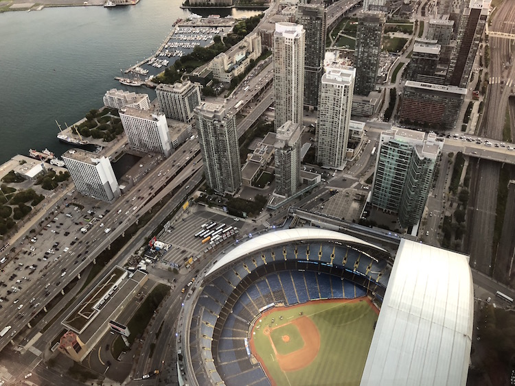

Toronto
A maior cidade do Canadá tem fama de desinteressante. Mas basta percorrer suas ruas pra ver que não é bem assim. Toronto tem atrações para todos os gostos, de praias e mirantes, a museus e bairros históricos. Veja quais são os principais pontos turísticos de Toronto para começar a planejar o que ver e fazer no seu roteiro.
Pontos turísticos
-
CN Tower

-
Ripley's Aquarium of Canada
-
Rogers Centre, Oestádio de beiseball
